|
Feb 24, 2007 4.5 hours - Assemble horizontal stabilizer
and elevator
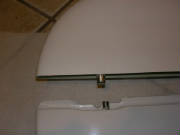
I did a little clean up of some excess epoxy around the elevator
hinge posts, installed the hinge pins temporarily and did a trial fit to check for any interference. The pins were a
pretty tight fit in the hinges in the stabilizer, so I removed the pins and coaxed them individually into the stabilizer hinges
to free things up a bit and exercise the lubricant that was hardened.
I used my rotary tool to cut relief
slots into the leading edge of the stabilizer gap seal at each of the outer hinge points. Installing only the center
pin on each elevator half made things much easier to assemble temporarily to check fit and clearance.
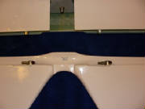
Then I installed the pins in the elevator with Loctite 262 and
marked them with red paint. One pin has a threaded end for a bolt to hold the elevator in place. This pin
goes in the left center hinge position (the elevator is upside down in the photo). The other five pins have smooth rounded
ends.
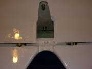
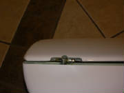
Finally, I greased the pins and hinges, and installed the elevator
(coaxing it into place with several raps of my hammer, as instructed in the kit manual, working the elevator up and down after
each couple of raps). I then worked the elevator back and forth a bunch of times to begin wearing-in the hinges and
pins. I then removed the elevator (helped again with my hammer), cleaned and re-greased the hinge pins and re-installed
it. I worked the elevator up and down again to further wear-in the pins. It was noticeably freer this time, altough
it was not alarmingly stiff even at first. The kit manual says to repeat this process several times to get the elevator
working freely.

Next I installed the horizontal stabilizer attach bolt assembly, which is a spring-loaded self-locking
arrangement captured by a spring clip in the stabilizer.
I removed the elevator at this point and stored
both stabilizer and elevator out of the way until later. I'll work the hinges a few more times before final installation.
More than half of this day's work was consumed by tracking down the pre-packaged parts that I had stored away,
going through the manual and the package inventories, comparing parts with pictures to figure out where they belong, and reading
ahead in the manual to ensure that I understand the assembly sequence. I have a few questions from all this that I have
emailed to the factory for clarification.
Mar 3, 2007 2.5 hours - Fabricate jig for rudder
bracket installation
Using aluminum angle and square tubing from Home Depot, and
some 6 mm hardware from Tacoma Screw, I fabricated a rudder bracket installation jig per the drawing from Pipistrel.
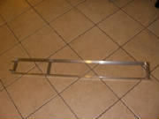
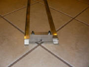
I
used Cherry pop rivets that I had on hand for the joints in the jig. The lower pins are 6 mm cap screws with the heads
cut off and the ends ground smooth. The upper cross piece is square tubing. The hole through the square tubing
will ensure that the upper support bracket hinge pin is aligned with the rudder hinge line. Pipistrel uses a bushing
at the top for the factory jig, but for limited use, the holes through the square tubing will be adequate. The shorter
square tubing extension fits between the sides of the vertical stabilizer to ensure that that support bracket is centered.
A trial fit of the jig with the rudder
control arm revealed that the pins were slightly too big to go through the holes in the arm. After reaming the holes
with a 6 mm drill, everything fits perfectly!
March 5, 2007 1.5 hours - Mount upper rudder hinge bracket
The kit includes epoxy and hardener for this step, but didn't
specifiy the mixing ratio. I received the epoxy mixing ratio from Tomaz email. It is 100:38 by weight (epoxy:hardener).
I have a small digital scale from Fry's Electonics with a resolution of 0.1g that I used to get the proper ratio. The method I use is:
First, get everything
up to working temperature of at least 65 degrees F. That includes the resin, hardener, working materials and all the
airplane parts that are going to be in contact with the epoxy. Plan to keep everything at that temperature until the
epoxy is fully cured -- 24 hours in this case. I had the epoxy and mixing materials at temperature in the house, and
did the mixing there. I used a heat lamp in the garage to warm the mounting surface and keep everything warm while it
cures. If you do this, be very careful not to get things too hot! 70 degrees to 85 degress F is what you want.
1. Put a paper cup on the scale (don't use one with a wax coating). Zero the scale.
2. Pour
about how much resin you think you will use into the cup. Note the weight.
3. Use a calculator to multiply
the resin weight by .38 to get the hardener weight.
4. Zero the scale, then carefully pour the calculated amount
of hardener into the cup. If you accidentally get too much, note the weight of the hardener that you have added, then
recalculate how much more resin you need.
5. Mix the resin and hardener with a mixing stick (I use wooden tongue
depressors) for two full minutes.
For this particular bonding operation, since there is a gap to fill between the
rudder bracket and the aft rudder bulkhead, mix enough flocked cotton into the epoxy to allow it to stand up in peaks in the cup. The flocked cotton, referred to as "flox" in
the composite aircraft community, is available from Aircraft Spruce or Wicks, or any number of suppliers of composite construction
materials.
Sand the mounting side of the bracket with coarse sandpaper, and sand the mounting area of the rudder
bulkhead until it is dull in the area where the bracket will be mounted.
Before I mounted the bracket, I measured
the rudder dimension between the upper bearing and the lower surface that attaches to the control arm. I compared this
measurement with the jig to ensure that there will be some clearance at the upper hinge point.
Satisfied with the jig dimensions, I secured the upper bracket in the jig
with a 1/4" model aircraft wheel collar. I applied the cotton flox mixture to the bracket, and placed
the lower jig pins in the control arm. I looped a length of cord connected to a couple of rubber bands around the top
of the rudder to hold the upper end of the jig with the bracket attached against the bulkhead. After checking everything
for fit and alignment, I wiped up the excess epoxy and finally applied a small piece of dacron cloth under the bracket to
control the epoxy sag until it cures. This dacron cloth is referred to as "peel ply" by the composite aircraft
builders. It keeps everything nice and flat while the epoxy cures, then peels off cleanly when the cure is completed.
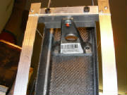
Here is the hinge bracket being held in position and alignment
by the upper jig cross piece.
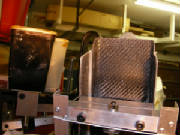
This is the top of the jig. You can see the round RC airplane
wheel collar clamped onto the pin to hold it in place in the jig while the epoxy cures.
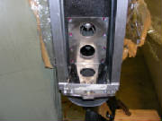
Here is the bottom of the jig inserted into the lower rudder
control arm.
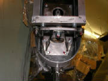
Here you can see the jig pins in the rudder mounting holes in the
control arm.
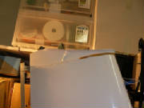
A loop of cord and a couple of rubber bands hold the upper part of
the jig in place and the hinge bracket against the rudder bulkhead while the epoxy cures.
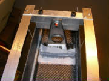
Here is the piece of dacron cloth that I used to keep the epoxy and
flox mixture from running out of the joint while the epoxy cures.
Mar 9, 2007 0.5 hours - Add attach bolts for upper rudder
hinge bracket
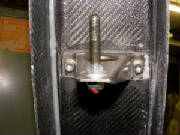
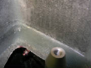
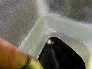
|
| You can just see the nut through the access hole in the top rudder bulkhead |
I removed a few small spots of excess cured flox with my
rotary tool, then drilled a 6 mm hole through the bracket attach points into the aft rudder buklhead. I inserted 6 mm
hex cap bolts through the holes and on the other side of the bulkhead installed large washers and nylon stop nuts with
Loctite 262. I then marked the nuts with red paint.
Jan 2, 2008 1.6 hours - Elevator hinge bracket
I attached the hinge bracket to the elevator control horn. This required first filing down the
ends of the bushing in the control horn so that it would fit between the tabs on the bracket. Then I had to line-bore
the holes in the bracket so that the hinge pin would go through them. I measured the diameter of the hinge pin, which
was 5.98 mm. So, a 6 mm drill should have worked perfectly; however, both of my drills were 5.95 mm, so I had to chuck
the drill in my drill press and run the bracket up and down the spinning drill by hand, applying side pressure in a rotary
manner, until I could tap the pin through the bracket. Doing all this by hand and working carefully took awhile,
but in the end the control horn moves smoothly on the hinge pin with no slop. I then greased everything,
slid the pin through the bracket and the control horn bushing, cleaned the grease from the threads on the ends of the pin
with alcohol, and screwed the nylon lock nuts on the ends of the pin after applying blue Loctite 243. I then marked
the nuts with orange thread lock.
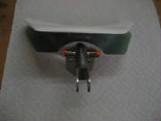
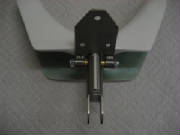
I slid the control horn onto the elevator and confirmed that it fit properly with no further adjustment.
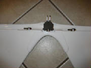
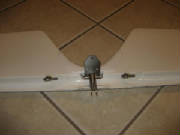
June 4, 2010 4.5 hours - Install rudder
and tailwheel steering
I reconnected the rudder pedals and checked for centering. I adjusted the firewall ends of the
cables slightly to center the linkage and ensure full pedal travel with the pedals at their full forward position. I
mounted the rudder to check for proper mating with the upper hinge pin and lower control arm. I ground recesses into
the bottom of the rudder to clear the cable swivel bolt heads, as instructed in the kit manual. Then I mounted the rudder and adjusted the stops for 30 degrees of rudder travel to each side. After checking that everything fits properly, I attached the rudder pedal springs to the bottom of the rudder, as
instructed in a previous email from Pipistrel. I mounted the rudder and marked the tail wheel springs for proper length.
I cut the springs to length with a cut-off wheel in my Dremel rotary tool, removing about an inch from each spring.
Then I attached the springs between the tail wheel steering arm and the fittings at the bottom of the rudder. The kit manual doesn't cover the tail wheel steering spring installation, but you can find the details that I received
from the factory here.
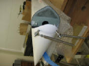
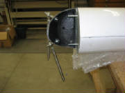
Finally I cleaned the aft portion of the vertical stabilizer
thoroughly with acetone and attached the rudder gap seal on both sides of the vertical stabilizer, with the zigzag edge forward
and the flexible seal strip extending aft to contact the rudder. The adhesive on the strip is very tenacious, so you
don't want to let it even touch the wrong place. The technique I used, which worked well, was to peel back about two inches
from the top end of the strip, carefully stick the end of the strip to the top of the aft edge of the vertical stabilizer,
then pull the peel strip off a couple of inches at a time, pushing small spots of the adhesive edge to the surface, then pull
the peel strip away another two inches, etc. After working all the way to the bottom of the gap seal in this manner,
I then ran my finger back up the entire strip to adhere the entire length. It sounds tedious, but it was actually very
easy and took only a few minutes.
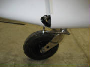
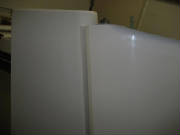
August 8th, 2010 6.5 hours - Install horizontal stabilizer
and elevator
I ground away the top of the rudder bulkhead above the top of the rudder as described in the kit manual.
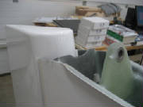
I mounted the elevator on the stabilizer and installed the keeper nut.
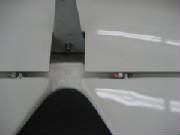
I had to remove the rudder to install the elevator control horn. I mounted
the horizontal stabilizer and elevator temporarily to determine the proper position for the control horn hinge. In order
to get the hinge brackt to lie perfectly flat against the rudder bulkhead, I had to bent the bracket slightly, as suggested
in the kit manual. This is important to achieve proper positioning of the bracket hinge after bolting it to the bulkhead.
Then I drilled the three mounting holes for the hinge. I removed the stabilizer and bolted the control horn hinge to
the rudder bulkhead.
I screwed a rod end bearing into the elevator push rod, then connected the elevator push rod
to the control horn. I mounted the stabilizer to check that the elevator is at zero deflection with the control stick
neutral, then adjusted the end bearing to achieve proper alignment. Then I tightened up all the bolts and marked them
with paint.
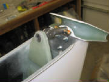
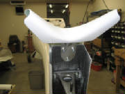
I discovered that I had not ground enough material off the tabs on the circle clip that secures the
stabilizer mounting bolt. This prevented the socket wrench from pushing the locking plunger down while turning the bolt.
So, I removed the circle clip, ground the tabs and re-installed it. Then I mounted the stabilizer,
confirmed free and positive movement of the elevator, and installed the cap over the mounting bolt.
This installation
was much more fiddly and time-consuming than the description indicates.
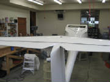
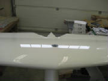
July 2nd, 2011 0.8 hours - Install elevator gap seal
I installed a gap seal on the top side of the
elevator, in the same manner as the flaperon seals. I found that it was possible to make the elevator seal continuous
from one end of the elevator to the other, so that's how I applied it.
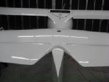
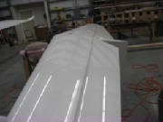
|